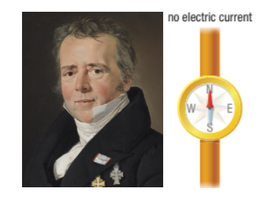
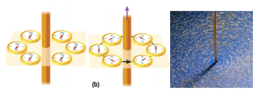
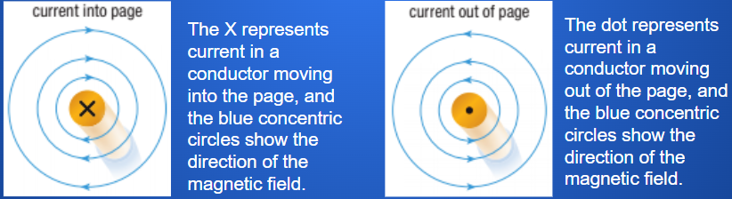
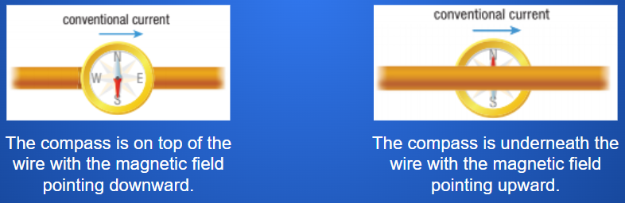

Oersted’s Discovery
Callout
In 1819, Danish physicist Hans Christian Oersted was the first scientist to successfully connect electricity and magnetism. We have since found out that the electromagnetic force is one of the four fundamental forces of nature.
Oersted hypothesized that the current would produce a magnetic field that radiated away from the wire. He tested his hypothesis with a compass held near a conducting wire in an electric circuit. He placed the compass so that it aligned with the wire, which, in turn, was aligned with Earth’s magnetic field.

Callout
Oersted’s Experiment
When an electric current was present in the wire, the compass needle was deflected perpendicular to the wire. When the current in the circuit was switched off, the compass needle went back to its original position. When the electric current was reversed, the compass needle was deflected in the opposite direction.
Further investigation led to an understanding of the shape of the magnetic field around a conductor. The magnetic field surrounds the conductor in the shape of concentric circles. The direction of the magnetic field depends on the direction of the current. Reversing the direction of the electric current also reverses the direction of the magnetic field. It was also noted that the strength of the magnetic field gets weaker farther away from the conducting wire.

Callout
Oersted’s Principle
In Oersted’s time, the prevailing theory assumed that electric current was directed from the positive terminal to the negative terminal of a power source. Many of the rules of electromagnetism were therefore developed using the conventional current model.
Oersted developed a principle that describes the magnetic field around a current-carrying conductor. Oersted’s principle states that a charge moving through a straight conductor produces a circular magnetic field around the conductor.
In Oersted’s time, the prevailing theory assumed that electric current was directed from the positive terminal to the negative terminal of a power source. Many of the rules of electromagnetism were therefore developed using the conventional current model.
Oersted developed a principle that describes the magnetic field around a current-carrying conductor. Oersted’s principle states that a charge moving through a straight conductor produces a circular magnetic field around the conductor.
Right-hand Rule for a Straight Conductor

The right-hand rule for a straight conductor states that if a straight conductor is held in your right hand with your right thumb pointing in the direction of the conventional current, your curled fingers will point in the direction of the magnetic field lines surrounding the conductor.
Callout
Representing Currents and Magnetic Fields
There are many different ways to represent a wire with a conventional current present in it. You can draw the wire in a three-dimensional way. You can also draw the wire as a cross-section. To represent a conventional current going into the page we use an X, and to represent a conventional current coming out of the page we use a dot.

Callout
Another method for showing the direction of the magnetic field is to use a compass. If you place the compass on top of the wire, the wire will be obscured by the compass. If you place the compass below the wire, the wire will obscure the compass

Callout
Oersted’s discovery forever changed the world, leading to new kinds of technologies, such as motors and generators. He demonstrated that we could use electricity to produce magnetism. Controlling magnetism means that we can turn it on and off and change its strength by increasing or decreasing the current. We can also control the direction of the magnetic field by changing the direction of the electric current.